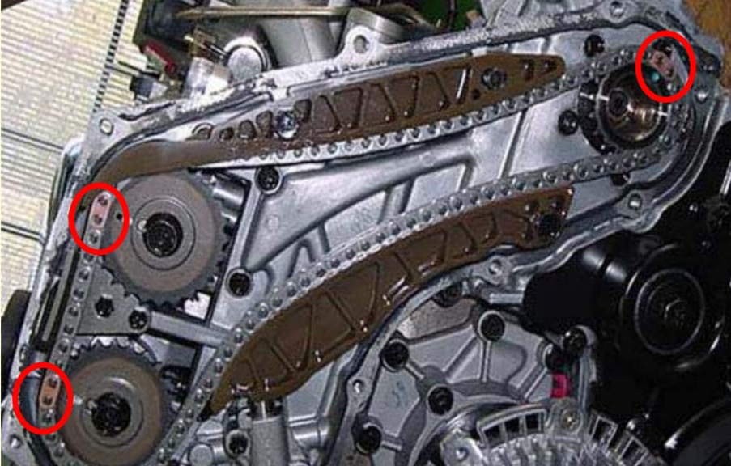

¿Tienes problemas con tu vehículo y no sabes cuál es la solución
¡Confía en nuestra empresa de reportes técnicos automotrices! Con más de 20 años de experiencia en el sector automotriz, brindamos soluciones precisas y confiables a nuestros clientes.
Nuestro equipo altamente capacitado utiliza las últimas tecnologías y herramientas para realizar un exhaustivo diagnóstico de su vehículo. Desde problemas de motor hasta fallas en los sistemas de frenos, aire acondicionado y electrónica, tenemos la solución para usted.

Además, ofrecemos un informe detallado y fácil de entender que incluye una descripción clara de los problemas y las soluciones recomendadas. Con nuestros reportes técnicos, puede estar seguro de que su vehículo está en buenas manos.